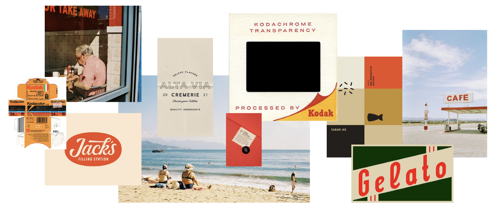
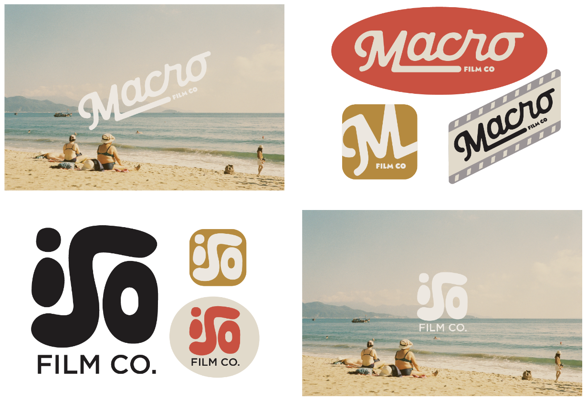
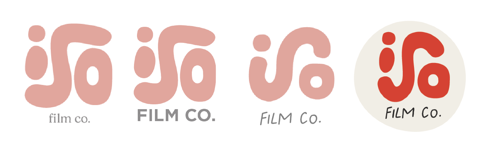
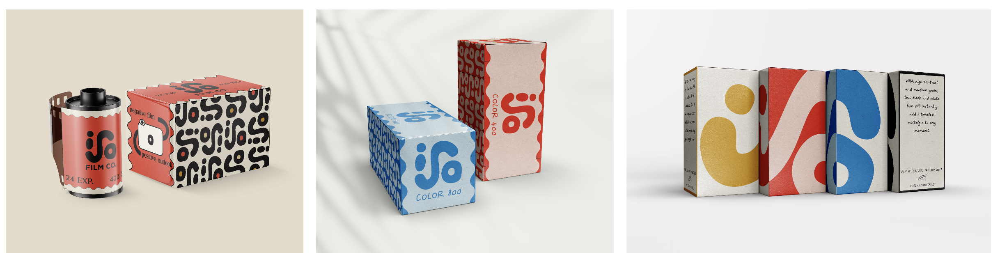
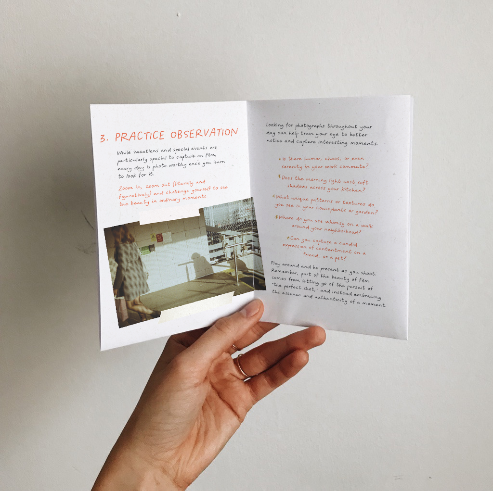
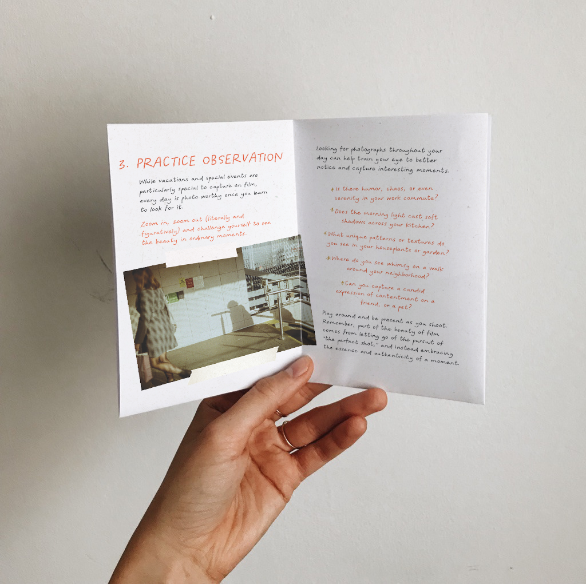

I began user research to further understand my target audience and their pain points, priorities, and preferred formats for a guided or prompted photography journey. To do this, I organized my research into three categories: asking participants about their experience taking digital photos, taking film photos, and their preferences specific to the product and concept.
I began with a moodboard - grounding my design choices with colors, type, and imagery that felt warm, and had a balance of nostalgia and contemporary. I took inspiration from old kodak packaging, ads, and the primary hues associated with developing film stock.
I then moved to naming–looking for photography terms that would hold a double meaning and incorporate the intention behind the brand. Of these, three surfaced:
I sketched and then digitiized the logos in Illustrator, eventually narrowing in on Macro and ISO as my finalists.
I felt very torn at this stage, understanding that either choice would take the whole project in a different direction. I began sharing these logos and seeking feedback from friends, fellow designers, and this capstone course. The feedback I received heavily favored iso for its unique hand drawn lockup and how it communicated a friendly and curious tone that aligned with this concept for a young, beginner-friendly photography brand.
Incorporating feedback, I continued forward with design adjustments to the form, making the s more rounded, finding supporting typography that would align with the hand crafted feel, and developing a branded pattern for alternative assets.

I began with the film box packaging designs, iterating and evolving the designs throughout the semester as I considered how a contemporary brand could stand out against established brands like Kodak or Fujifilm. I wanted to quickly distinguish film stocks from one another by branding each with a different color, and explored how to encourage the idea of collecting different film stocks by having them interact with each other on the shelf.
A major pain point that surfaced in user testing was feeling intimidated by knowing what film to buy and shoot with, so I wanted to address this in the packaging as well. Each box also contains friendly copy describing the environments each film stock thrives in so customers can feel educated and confident instead of confused and intimidated by this particular shopping experience.

I then designed several zines to help guide the user's photography journey. With advice like "Change your POV," each zine includes practical photography tips when taken literally, but double as metaphorical that also align with the ISO Film Co branded ethos.
 

Following user feedback, users wanted an analog experience when shooting film… but being able to shop online is a practicality users strongly preferred. And upon deeper consideration, this would be preferred from all angles, as I would want ISO Film Co. available across regions and not live solely as a brick and mortar store.